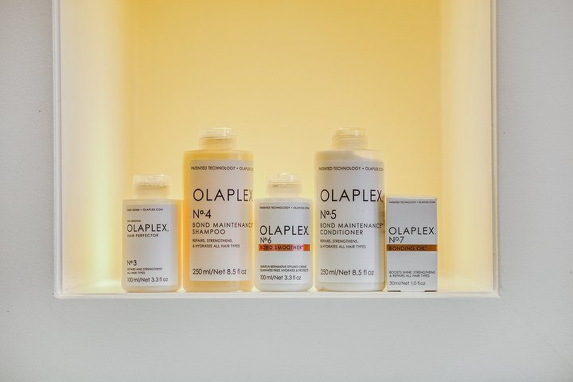

Kleur
Kleurspecialisten,
zeggen ze zelf.
Van uitgroei bijwerken tot balayage en highlights, en combinaties van kleuren en knippen in één afspraak. Ook keratine en Olaplex.

Waar ze mee werken
In de nis bij de spiegels staat Olaplex. Dat is geen detail: wie zijn haar laat kleuren wil weten waarmee het daarna verzorgd wordt.
Foto uit hun eigen salon.
Kleur en verzorging
Kleuren
Kleuren Prijzen worden per hoeveelheid cc's gerekend 40,60,80 en 100cc. Er zal een meerprijs gerekend worden als er meer verf nodig is dan de aangegeven cc's 1 uur 15 min Folies - Heel hoofd Bij veel en dik haar zal er een toeslag gerekend worden. Toner is exclusief! Inclusief wassen en drogen. 1 uur 45 min Vrouwen-folies deel van het haar- vanaf Deel folie is vanaf de oren, net onder de kruin ( half hoofd ) . Bij veel en dik haar zal er een meerprijs berekend worden. Exclusief toner inclusief drogen. 1 uur 35 minKleur- & Knipcombinaties
Kleuren, knippen & drogen Bij deze behandeling zal je haar voorzien worden van 1 kleuring ,om de uitgroei bij te werken, je grijze haren te dekken of het gehele haar weer egaal te maken. Als je eventueel een high- of lowlight wilt of een andere kleur techniek erbij wenst, dient er extra tijd ingepland te worden. Hiervoor zullen extra kosten in rekening worden gebracht. Je kunt altijd bellen voor inplan hulp! 1 uur 30 min Folies deel van het hoofd, knippen & drogen Let op: de genoemde prijs is een vanaf-prijs. De definitieve prijs is onder andere afhankelijk van je persoonlijke wensen en hoor je in de salon. Betaal je online? Dan wordt het eventuele prijsverschil verrekend in de salon. Highlights zijn lichte accenten in je haar. Deze worden aangebracht door middel van de folietechniek. In principe kan je voor elke folie een andere kleur gebruiken waardoor je veel verschillende tinten krijgt. Het voordeel van highlights ten opzichte van een coupe soleil is dat je de volgende keer heel gericht dezelfde plukje kunt pakken en deze weer kunt oplichten. Een ander voordeel van highlights is dat je dichter bij de aanzet kunt komen waardoor je minder snel een uitgroei krijgt. Een DEEL folie gaat om de top van het hoofd (oor tot oor) 1 uur 45 min Folies deel van het hoofd, knippen & föhnen Let op: de genoemde prijs is een vanaf-prijs. De definitieve prijs is onder andere afhankelijk van je persoonlijke. Betaal je online? Dan wordt het eventuele prijsverschil verrekend in de salon. Highlights zijn lichte accenten in je haar. Deze worden aangebracht door middel van de folietechniek. In principe kan je voor elke folie een andere kleur gebruiken waardoor je veel verschillende tinten krijgt. Het voordeel van highlights ten opzichte van een coupe soleil is dat je de volgende keer heel gericht dezelfde plukje kunt pakken en deze weer kunt oplichten. Een ander voordeel van highlights is dat je dichter bij de aanzet kunt komen waardoor je minder snel een uitgroei krijgt. Een DEEL folie gaat om de top van het hoofd (oor tot oor) 2 uur Folies heel hoofd, knippen & drogen 2 uur 10 min Folies heel hoofd, knippen & föhnen 2 uur 10 minKeratinebehandeling
Keratinebehandeling Kort haar tot BOVEN de schouders Tijdens deze intensieve behandeling wordt vloeibare keratine op je haar aangebracht en vervolgens geseald met een stijltang. Dankzij de hitte kan de keratine doordringen tot de kern van ieder haartje, waardoor je haar diep gevoed wordt. Je haar wordt hierdoor niet alleen pluisvrij en glanzend, maar ook tot 80% steiler (voor 3 à 5 maanden). Indien het haar erg dik is, kan er een meerprijs gerekend worden. 2 uur 40 min€200 Keratinebehandeling Halflang haar tot NET OVER schouders Tijdens deze intensieve behandeling wordt vloeibare keratine op je haar aangebracht en vervolgens geseald met een stijltang. Dankzij de hitte kan de keratine doordringen tot de kern van ieder haartje, waardoor je haar diep gevoed wordt. Je haar wordt hierdoor niet alleen pluisvrij en glanzend, maar ook tot 80% steiler (voor 3 à 5 maanden). Indien het haar dik is, kan er een meerprijs gerekend worden. 3 uur 10 min€230 Keratinebehandeling LANG/DIK haar Tijdens deze intensieve behandeling wordt vloeibare keratine op je haar aangebracht en vervolgens geseald met een stijltang. Dankzij de hitte kan de keratine doordringen tot de kern van ieder haartje, waardoor je haar diep gevoed wordt. Je haar wordt hierdoor niet alleen pluisvrij en glanzend, maar ook tot 80% steiler (voor 3 à 5 maanden). Indien het haar dik is, kan er een meerprijs gerekend worden 3 uur 50 min€290Verzorging
Olaplex-behandeling Olaplex herstelt haarbeschadiging dat is veroorzaakt door chemische of thermische beschadiging. Olaplex is in staat om gebroken zwavelbruggen in je haar op te sporen en je haar van binnenuit te herstellen. Een Olaplex-behandeling kan ook worden ingezet om gezond haar te behouden of om beschadiging te voorkomen. 1 uurTwijfel je over de kleur?
Zet het in de aanvraag. Dan bellen ze je terug voor het gesprek erover.
Afspraak aanvragen